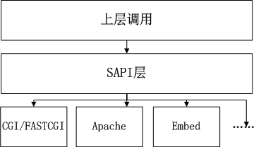
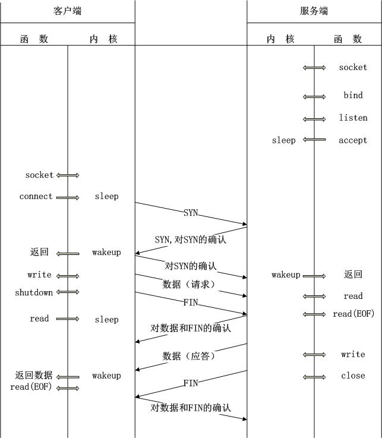

SAPI目录存放了PHP对各个服务器抽象层的代码，例如命令行程序的实现，Apache的mod_php模块实现以及fastcgi的实现等等。
在各个服务器抽象层之间遵守着相同的约定，这里我们称之为SAPI接口。
SAPI简单示意图

整个SAPI类似于一个面向对象中的模板方法模式的应用。SAPI.c和SAPI.h文件所包含的一些函数就是模板方法模式中的抽象模板，各个服务器对于sapi_module的定义及相关实现则是一个个具体的模板。
当PHP需要在Apache服务器下运行时，一般来说，它可以mod_php5模块的形式集成，此时mod_php5模块的作用是接收Apache传递过来的PHP文件请求，并处理这些请求，然后将处理后的结果返回给Apache。
在Apache启动前在其配置文件中配置好了PHP模块（mod_php5），PHP模块通过注册apache2的ap_hook_post_config挂钩，在Apache启动的时候启动此模块以接受PHP文件的请求。 Apache的模块可以在运行的时候动态装载，这意味着对服务器可以进行功能扩展而不需要重新对源代码进行编译，甚至根本不需要停止服务器。
Apache的运行分为启动阶段和运行阶段。
启动阶段
在启动阶段，Apache为了获得系统资源最大的使用权限，将以特权用户root（*nix系统）或超级管理员Administrator(Windows系统)完成启动，并且整个过程处于一个单进程单线程的环境中。这个阶段包括配置文件解析(如http.conf文件)、模块加载(如mod_php，mod_perl)和系统资源初始化（例如日志文件、共享内存段、数据库连接等）等工作。
Apache的启动阶段执行了大量的初始化操作，并且将许多比较慢或者花费比较高的操作都集中在这个阶段完成，以减少了后面处理请求服务的压力。
运行阶段
在运行阶段，Apache主要工作是处理用户的服务请求。在这个阶段，Apache放弃特权用户级别，使用普通权限，这主要是基于安全性的考虑，防止由于代码的缺陷引起的安全漏洞。Apache对HTTP的请求可以分为连接、处理和断开连接三个大的阶段。同时也可以分为11个小的阶段，依次为：Post-Read-Request，URI Translation，Header Parsing，Access Control，Authentication，Authorization，MIME Type Checking，FixUp，Response，Logging，CleanUp
Apache 的Hook机制是指：Apache 允许模块(包括内部模块和外部模块，例如mod_php5.so，mod_perl.so等)将自定义的函数注入到请求处理循环中。换句话说，模块可以在Apache的任何一个处理阶段中挂接(Hook)上自己的处理函数，从而参与Apache的请求处理过程。mod_php5.so/ php5apache2.dll就是将所包含的自定义函数，通过Hook机制注入到Apache中，在Apache处理流程的各个阶段负责处理php请求
request_rec对象当一个客户端请求到达Apache时，就会创建一个request_rec对象，当Apache处理完一个请求后，与这个请求对应的request_rec对象也会随之被释放。request_rec对象包括与一个HTTP请求相关的所有数据，并且还包含一些Apache自己要用到的状态和客户端的内部字段。
server_rec对象server_rec定义了一个逻辑上的WEB服务器。如果有定义虚拟主机，每一个虚拟主机拥有自己的server_rec对象。server_rec对象在Apache启动时创建，当整个httpd关闭时才会被释放。它包括服务器名称，连接信息，日志信息，针对服务器的配置，事务处理相关信息等server_rec对象是继request_rec对象之后第二重要的对象。
conn_rec对象conn_rec对象是TCP连接在Apache的内部实现。它在客户端连接到服务器时创建，在连接断开时释放。
嵌入式PHP类似CLI，也是SAPI接口的另一种实现。一般情况下，它的一个请求的生命周期也会和其它的SAPI一样：模块初始化=>请求初始化=>处理请求=>关闭请求=>关闭模块。
CGI全称是“通用网关接口”(Common Gateway Interface)，它可以让一个客户端，从网页浏览器向执行在Web服务器上的程序请求数据。CGI描述了客户端和这个程序之间传输数据的一种标准。CGI的一个目的是要独立于任何语言的，所以CGI可以用任何一种语言编写，只要这种语言具有标准输入、输出和环境变量。如php，perl，tcl等。
FastCGI是Web服务器和处理程序之间通信的一种协议，是CGI的一种改进方案，FastCGI像是一个常驻(long-live)型的CGI，它可以一直执行，在请求到达时不会花费时间去fork一个进程来处理(这是CGI最为人诟病的fork-and-execute模式)。正是因为他只是一个通信协议，它还支持分布式的运算，即 FastCGI 程序可以在网站服务器以外的主机上执行并且接受来自其它网站服务器来的请求。
FastCGI的整个工作流程是这样的：
PHP的CGI实现了Fastcgi协议，是一个TCP或UDP协议的服务器接受来自Web服务器的请求，当启动时创建TCP/UDP协议的服务器的socket监听，并接收相关请求进行处理。随后就进入了PHP的生命周期：模块初始化，sapi初始化，处理PHP请求，模块关闭，sapi关闭等就构成了整个CGI的生命周期。
TCP上客户-服务器事务的时序

PHP在读取到脚本文件后首先对代码进行词法分析，PHP的词法分析器是通过lex生成的， 词法规则文件在$PHP_SRC/Zend/zend_language_scanner.l，这一阶段lex会会将源代码按照词法规则切分一个一个的标记(token)。
然后使用语法分析器(PHP使用bison生成语法分析器， 规则见$PHP_SRC/Zend/zend_language_parser.y)，bison根据规则进行相应的处理， 如果代码找不到匹配的规则，也就是语法错误时Zend引擎会停止，并输出错误信息。
在匹配到相应的语法规则后，Zend引擎还会进行编译， 将代码编译为opcode， 完成后，Zend引擎会执行这些opcode， 在执行opcode的过程中还有可能会继续重复进行编译-执行，例如执行eval，include/require等语句， 因为这些语句还会包含或者执行其他文件或者字符串中的脚本。
编程语言的编译器(compiler)或解释器(interpreter)一般包括两大部分
Lex和Yacc可以解决第一个问题。第一个部分也可以分为两个部分：
Lex和Yacc是Unix下的两个文本处理工具， 主要用于编写编译器， 也可以做其他用途。
Lex读取词法规则文件，生成词法分析器。
Bison和Flex类似，也是使用%%作为分界不过Bison接受的是标记(token)序列，根据定义的语法规则，来执行一些动作，Bison使用巴科斯范式(BNF)来描述语法。
opcode是计算机指令中的一部分，用于指定要执行的操作，指令的格式和规范由处理器的指令规范指定。
PHP有三种方式来进行opcode的处理:CALL，SWITCH和GOTO，PHP默认使用CALL的方式，也就是函数调用的方式， 由于opcode执行是每个PHP程序频繁需要进行的操作，可以使用SWITCH或者GOTO的方式来分发， 通常GOTO的效率相对会高一些，不过效率是否提高依赖于不同的CPU。